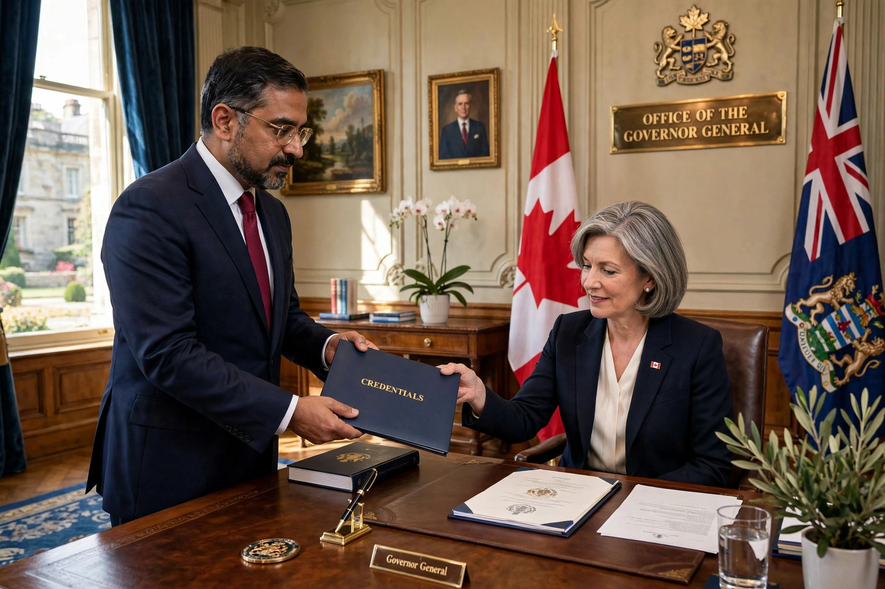

High commissioner (Commonwealth)

A high commissioner is the senior diplomat in charge of the diplomatic mission of one Commonwealth government to another, called a high commission. The office is the Commonwealth equivalent of an ambassador: the high commissioner represents their head of government, is accredited to the receiving head of government (through its foreign ministry rather than, formally, to the head of state), and enjoys the same diplomatic status, immunities and precedence as an ambassador.
History
The first such appointment was Canada's High Commissioner in London, established in 1880 when Sir Alexander Galt took up the post representing the Dominion to the United Kingdom. Other self-governing colonies followed, and as the Dominions became sovereign states the role became fully diplomatic. The British government likewise appoints high commissioners to Commonwealth capitals — a practice dating from the interwar period (the first British high commissioner, to Canada, was appointed in 1928).
Role
High commissioners perform the standard functions of heads of mission: political representation and reporting, negotiation, trade and cultural promotion, and supervision of consular services. Their deputies are deputy high commissioners, paralleling deputy heads of mission elsewhere. Appointees may be career diplomats or political appointees, depending on the sending country's practice.
Other uses of the title
"High Commissioner" is also used outside the Commonwealth context — notably the UN High Commissioner for Human Rights and the UN High Commissioner for Refugees, who head international agencies — and historically for administrators of territories, such as the British High Commissioners in Palestine and South Africa. See also Diplomatic rank.